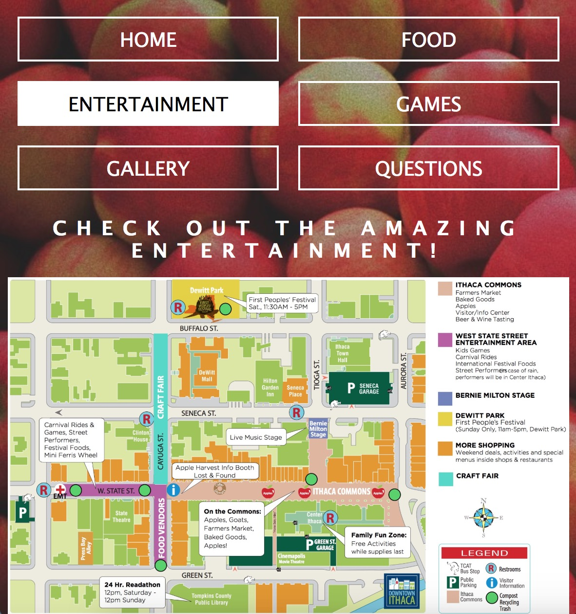
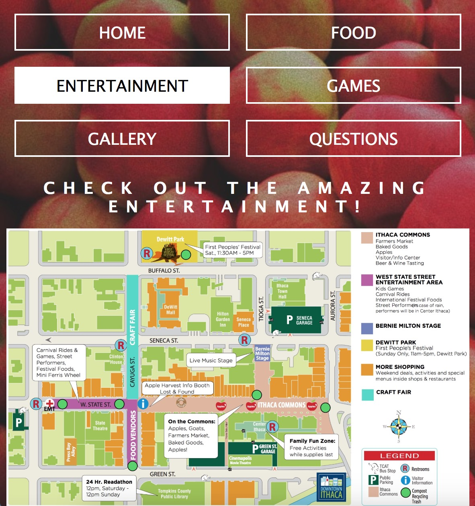

Description: Learned HTML, CSS, and Javascript. Learned how to design websites with target audiences.
Project 1: This website was entirely designed by HTML, CSS, and Javascript.
Project 2 & 3: Redesign the Apple Harvest Festival Website. I implemented user-friendly mobile pages.
The Apple Harvest Festival's original website was cluttered and had too much information on it. I re-formatted the website by adding simpler and more obvious functions for the general audience to navigate. The interactivity of the website is to help increase engagement and interest with the website.


 



Project 4: Created a website with a group of 4 people for the Terrace Restaurant at Cornell University.
Contacted the manager of Terrace Restaurant and asked for any specific asserts the manager would like on the website. Website pages are designed to help students understand how to order food at the restaurant. We wanted to increase attention to the workers at the restaurant and acknowledge the hard work that they do for Cornell.


Description: Create posters and whiteboards for the ongoing events that happen at the house.

Description:I was in charge of the publicity materials for Key Club, an international volunteering organization, in high school.